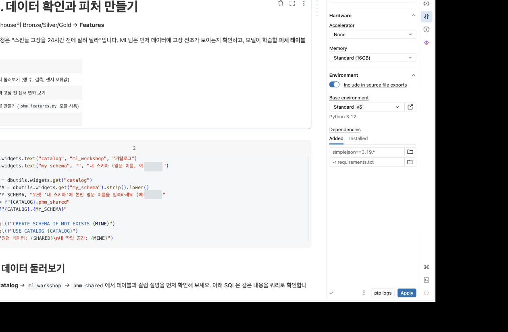

사전 준비¶
1단계 - 실습 노트북 가져오기¶
실습 파일은 별도로 전달합니다
이 사이트에서는 실습 파일 묶음을 내려받지 않습니다. 진행팀(담당자)에게 전달받은 mlops_workshop.zip을 워크스페이스에 Import하여 진행합니다.
- 왼쪽 사이드바 Workspace → 본인 폴더를 엽니다.
- 오른쪽 위 ⋮ → Import를 누르고, 전달받은
mlops_workshop.zip을 선택해 Import 합니다. mlops_workshop폴더 안에AGENTS.md,genie-code,step0~step6폴더가 생겼는지 확인합니다.
폴더 구조를 바꾸지 마세요
노트북이 같은 폴더의 .py 모듈(phm_features.py, phm_model.py 등)을 불러옵니다. 폴더 이름과 위치를 그대로 두세요.
2단계 - 컴퓨트 연결¶
step1/1_data_and_features노트북을 엽니다.- 오른쪽 위 컴퓨트 선택에서 Serverless를 고릅니다.
-
오른쪽 Environment 패널(⚙ 아이콘)을 열어 환경 버전이 5인지 확인합니다. 노트북에 미리 지정되어 있어 바꿀 필요가 없습니다.

왜 환경 버전 5인가요?
서버리스 환경 버전 5에는 실습에 필요한 MLflow·scikit-learn·pandas가 미리 설치되어 있습니다. 추가로 설치할 패키지가 없어서 모두 같은 환경에서 그대로 실행됩니다. 다른 알고리즘(LightGBM·XGBoost 등)을 써 보고 싶다면 Base environment에서 ML 을 고르세요.
서버리스를 쓸 수 없는 경우
진행팀이 미리 만들어 둔 내 이름의 All-purpose 컴퓨트(DBR 17.3 LTS ML)에 연결합니다. 실습 내용은 같습니다. 자세한 내용은 부록: 컴퓨트를 보세요.
3단계 - 내 스키마 이름 정하기¶
노트북마다 위쪽 위젯 내 스키마에 본인 영문 이름을 입력합니다. 예: juyeon
- 영문 소문자·숫자·밑줄(
_)만 씁니다. - 실습에서 만드는 테이블·모델·Job이 모두
mlops_edu_dev.<내 스키마>에 만들어져 다른 사람과 섞이지 않습니다.
공유 데이터는 읽기 전용입니다
mlops_edu_dev.phm_shared의 테이블은 모두가 함께 읽습니다. 쓰기는 항상 내 스키마에만 합니다.
4단계 - Genie Code 패널 열기¶
- 워크스페이스 오른쪽 위의 Genie Code 아이콘을 클릭합니다. 오른쪽에 채팅 패널이 열립니다.
- 패널이 열리지 않거나 "사용할 수 없음"이 보이면 진행자에게 알립니다. 워크스페이스 관리자가 파트너 AI 기능(Partner-powered AI features)을 켜야 Genie Code의 에이전트 기능을 쓸 수 있습니다.
준비 완료
이제 0) Genie Code 시작하기로 이동합니다.